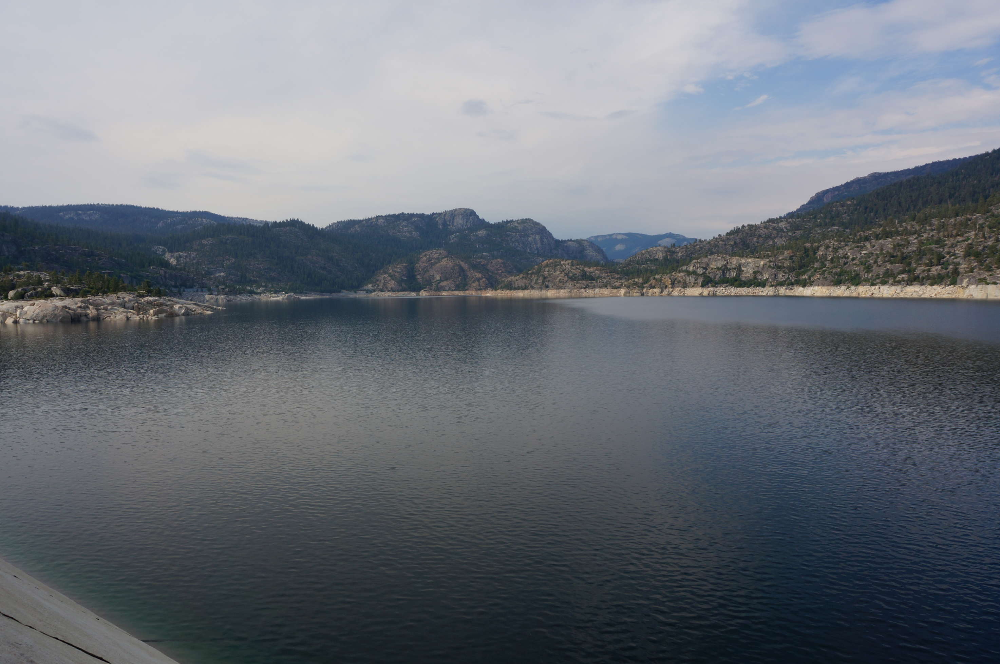
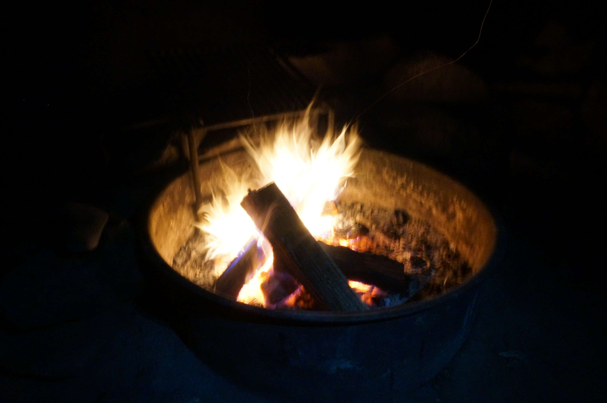
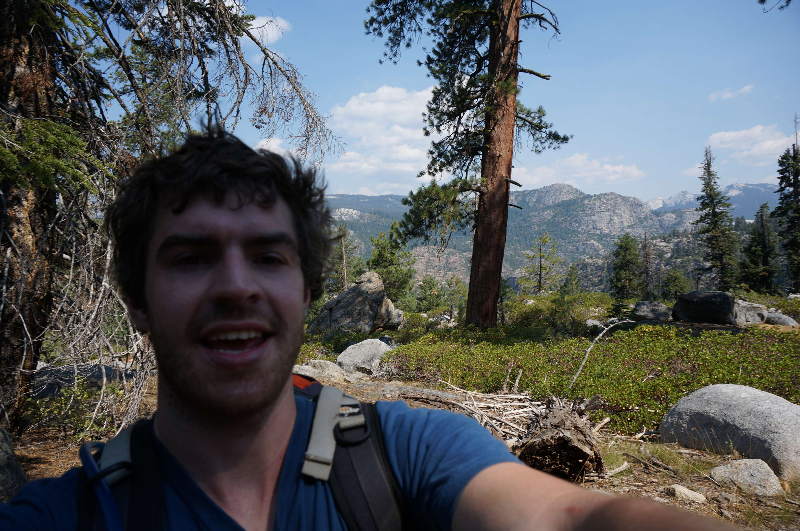
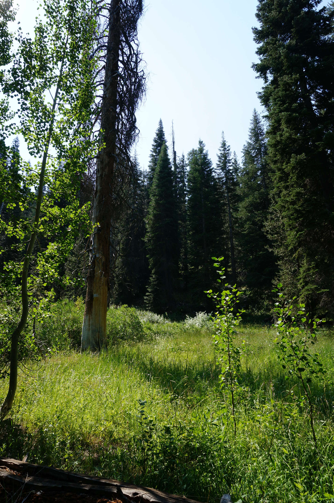

We pretty much picked this place at random if I recall correctly. It's just south of Yosemite. The advantage of this over Yosemite is that it wasn't on fire, and the drought here wasn't so bad, so there was a bit of water.
The place we camped at was staggeringly beautiful. A 3 minute walk down to the reservoir, which had cold, clear water perfect for swimming. Nobody else around for a couple of miles, and almost walled by slanted rocks all around the campsite. We were warned to be careful with our food (friendly lady at the nearby store - "there have been a lot of black bears lately...") and then by the camping people to watch out for rattlesnakes. America is much more exciting than Europe.
These is taken from standing on the huge dam.
Playing with fire/anime haircut. The firepit was great - adjustable grill on top, perfect for flame grilling dinner.
The next morning, Berry decided to go for a 20 mile hike by himself because he is insane. He seemed to have fun, this time he at least knew to take water. I lent him my camera, so here are some snaps from that.
The start of the trip...
Such green!
Florian and I were lazier that day - we drove up to another reservoir that was drained, so we walked along the bed for a few minutes. Then we just swam, and sat around reading waiting for Berry to return.
As stated, the site was absolutely stunning, so we stayed a second night there - kind of a rarity on the trip. The next morning we drove to Santa Cruz.